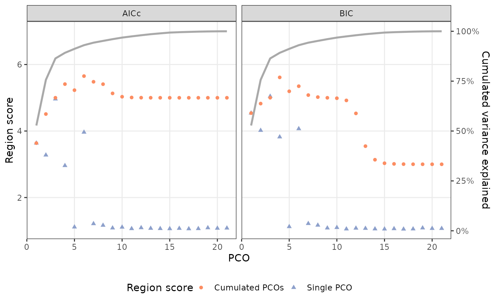

PCOselect() provides several methods to select the number of principal coordinates (PCOs) analysis scores to be used in subsequent analyses.
Arguments
- pco
a
regions_pcoobject; the output of a call tosvdPCO().- method
string; the method used to select the number of PCOs. Allowable options include
"manual","boot","variance", and"max". Default is"manual". Abbreviations allowed. See Details.- scores
when
method = "manual", the number of PCO scores to use.- cutoff
when
method = "variance", the cutoff for the variance explained by each PCO score.- nreps
when
method = "boot", the number of bootstrap replications to use.- results
when
method = "max", aregions_resultsobject, the output of a call tocalcregions().- criterion
when
method = "max", which criterion should be used to select the number of scores. Allowable options include"aic"and"bic". Abbreviations allowed.- verbose
when
method = "boot", whether to display a progress bar. Default isTRUE.- x
for
plot.regions_pco_select(), aregions_pco_selectobject, the output of a call toPCOselect()withmethod = "boot"or"max".- ...
ignored.
- object
a
regions_pco_selectobject, the output of a call toPCOselect()withmethod = "max".
Value
For PCOselect(), a regions_pco_select object, which is a numeric vector containing the indices of the chosen PCOs, with attributes containing information about the PCO scores chosen by the specified method. When method = "boot", the bootstrap results are stored in the "boot" attribute. When method = "max", the regions_results object passed to regions and other information about the quality of fit for each number of PCOs are stored in the "pcomax" attribute.
The plot() methods each return a ggplot object that can manipulated using ggplot2 syntax. The summary() method returns a data.frame of results.
Details
Each method provides an alternate way to select the number of scores. These are described below.
method = "manual":
This simply returns the number supplied to scores after running some checks to ensure it is valid.
method = "boot"
Bootstrapping works by comparing the eigenvalue distributions of PCOs to those with randomized data in order to extract PCO axes with significant signal, which are defined as those with eigenvalues greater than those from randomized data. The returned PCO cutoff is the largest PCO axis whose eigenvalues fall below the mean eigenvalue for that axis from the randomized data. Data are randomly sampled by row. Bootstrapping is sensitive to unequal variances of columns, so scale = TRUE should be set in the call to svdPCO(), which is the default; the data are scaled in the same way prior to bootstrapping. The plot() method displays the eigenvalues of the true PCOs and boxplots summarizing the distribution of the bootstrapped eigenvalues for each PCO.
method = "variance"
This method works by computing the ratio of each eigenvalue to the sum of the eigenvalues (i.e., to compute the proportion of variance explained by each PCO score) and select the number of scores with ratios greater than the cutoff value supplied to cutoff.
method = "max"
This method works by selecting the smallest number of PCOs that gives a region score within .001 of the maximum possible region score for the segmented models fit in the object supplied to results. Which criterion is maximized (AIC or BIC) is determined by the value supplied to criterion. The summary() method displays the region score (estimated number of regions) for each PCO (RSind) and for PCOs cumulatively (RScum) selected using the AICc or BIC as well as the cumulative proportion of variance explained by the PCOs. The plot() method displays this information graphically, with the left y-axis displaying the region score for the PCOs individually (pale blue triangles) and cumulatively (orange circles) using each of the two criteria, and the right y-axis displaying the cumulative percentage of variance explained by the PCOs.
Examples
data("alligator")
alligator_data <- process_measurements(alligator,
pos = "Vertebra")
# Compute PCOs
alligator_PCO <- svdPCO(alligator_data)
# Select which PCOs to use
## Manually (first 4 PCOs)
(PCOs <- PCOselect(alligator_PCO, "manual", scores = 4))
#> A `regions_pco_select` object
#> - PCO scores selected: 1, 2, 3, 4
#> - Method: manual
## Using variance cutoff: PCOs that explain 5% or more
## of total PCO variance
(PCOs <- PCOselect(alligator_PCO, "variance", cutoff = .05))
#> A `regions_pco_select` object
#> - PCO scores selected: 1, 2, 3
#> - Method: variance (cutoff: 0.05)
## Using bootstrapping with 50 reps (more reps should
## be used in practice; default is fine)
(PCOs <- PCOselect(alligator_PCO, "boot", nreps = 50))
#> Bootstrapping...
#> A `regions_pco_select` object
#> - PCO scores selected: 1, 2
#> - Method: boot (50 replications)
plot(PCOs) #plot true eigenvalues against bootstrapped
## Using PCOs that optimize region score:
regionresults <- calcregions(alligator_PCO, scores = 1:21, noregions = 7,
minvert = 3, cont = TRUE, exhaus = TRUE,
verbose = FALSE)
(PCOs <- PCOselect(alligator_PCO, "max",
results = regionresults,
criterion = "bic"))
#> A `regions_pco_select` object
#> - PCO scores selected: 1, 2, 3, 4
#> - Method: max (criterion: BIC)
plot(PCOs)

summary(PCOs)
#> PCO RSind.AICc RScum.AICc RSind.BIC RScum.BIC CumulVar
#> 1 3.636 3.636 4.539 4.539 0.528
#> 2 3.277 4.511 4.018 4.825 0.756
#> 3 4.963 5.000 5.044 5.001 0.864
#> 4 2.960 5.411 3.822 5.613 0.892
#> 5 1.112 5.228 1.124 5.195 0.912
#> 6 3.963 5.652 4.068 5.348 0.930
#> 7 1.212 5.481 1.217 5.081 0.943
#> 8 1.164 5.409 1.168 5.020 0.952
#> 9 1.084 5.132 1.083 5.000 0.960
#> 10 1.108 5.031 1.097 4.987 0.968
#> 11 1.063 5.009 1.054 4.921 0.974
#> 12 1.091 5.003 1.078 4.530 0.980
#> 13 1.073 5.001 1.072 3.545 0.985
#> 14 1.065 5.000 1.056 3.136 0.990
#> 15 1.062 5.000 1.052 3.031 0.993
#> 16 1.072 5.000 1.062 3.012 0.995
#> 17 1.059 5.000 1.050 3.004 0.997
#> 18 1.064 5.000 1.055 3.001 0.998
#> 19 1.089 5.000 1.085 3.001 0.999
#> 20 1.075 5.000 1.069 3.000 1.000
#> 21 1.081 5.000 1.069 3.000 1.000